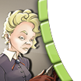

Bill Noface
In Phase 1 nimmt er eine Karte plus 1 weitere Karte für jede Verletzung (verlorenen Lebenspunkt), die er aktuell erlitten hat.

 ] als "FEHLSCHUSS!"-Karten [
] als "FEHLSCHUSS!"-Karten [ ] benutzen und umgekehrt. Sie darf jedoch weiterhin nur eine "BANG!"-Karte pro Runde spielen.
] benutzen und umgekehrt. Sie darf jedoch weiterhin nur eine "BANG!"-Karte pro Runde spielen.

Erfolg: Oh-oh-ooh!
 ] ausspielen.
] ausspielen.
Erfolg: Mit einem Bein im Grab
Erfolg: Zombierache





Erfolg: Brudermörder